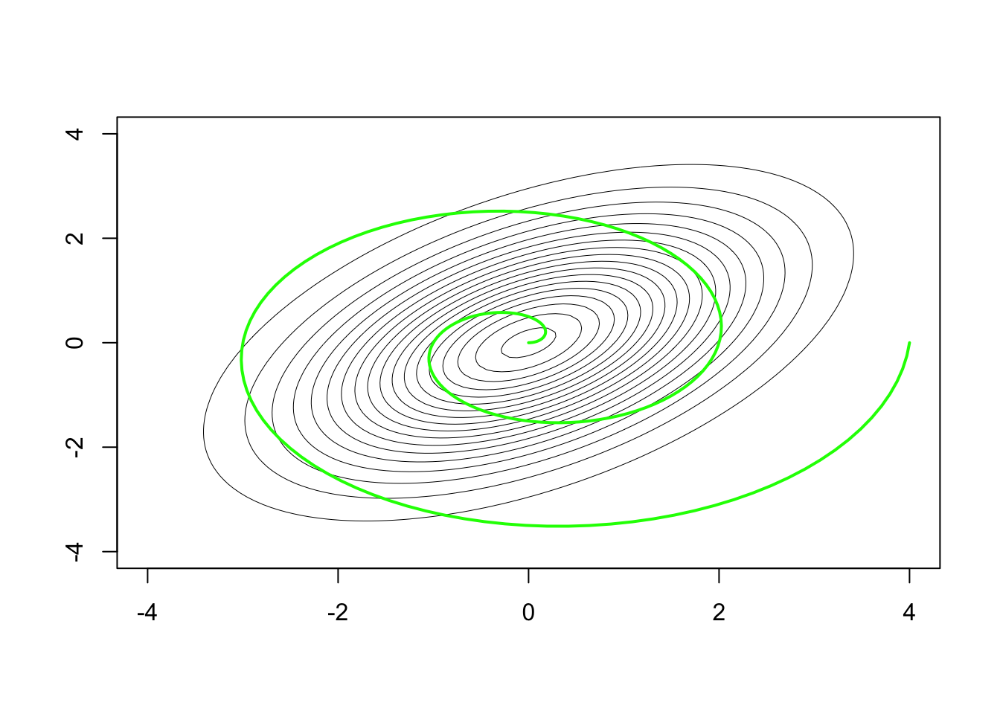

Suppose \(\mathbf{X}_1,\dots,\mathbf{X}_n\) are independent realizations of the random variable \(\mathbf{X}= (X_1,\dots,X_d)^T \in \mathbb{R}^d\), where \(\mathbb{E}\mathbf{X}= \mathbf{0}\), \(\mathbb{E}\mathbf{X}\mathbf{X}^T = \boldsymbol{\Sigma}\), and consider the quantity \[
\mathbf{Z}_n = \sqrt{n}\bar{\mathbf{X}}_n \overset{\text{d}}{\longrightarrow}\mathcal{N}(\mathbf{0},\boldsymbol{\Sigma}) \quad \text{ as } n\to \infty,
\] where \(\sqrt{n}\bar{\mathbf{X}}_n = n^{-1/2}\sum_{i=1}^n \mathbf{X}_i\) and the convergence in distribution is given by the multivariate central limit theorem. Denote the density of \(\mathbf{Z}_n\) by \(f_{\mathbf{Z}_n}\) and let \(\phi(\cdot;\boldsymbol{\Sigma})\) denote the density of the \(\mathcal{N}(\mathbf{0},\boldsymbol{\Sigma})\) distribution.
We will present only the first-order Edgeworth expansion for the density \(f_{\mathbf{Z}_n}\), which will depend on moments of order \(3\); in particular, it depends on all of the moments \(\mathbb{E}[X_1^{\alpha_1}\cdots X_d^{\alpha_d}]\), where \(\alpha_j\) is a non-negative integer for \(j=1,\dots,d\) and \(\alpha_1+\dots+\alpha_d = 3\). To enumerate these moments, we find it most convenient to use multi-index notation: Let \(\mathbf{X}^{\boldsymbol{\alpha}} = X_1^{\alpha_1}\cdots X_d^{\alpha_d}\), and let \(|\boldsymbol{\alpha}| =\alpha_1+\dots+\alpha_d\). Moreover, for a vector \(\mathbf{x}\in \mathbb{R}^d\), let \[
\frac{\partial^{\boldsymbol{\alpha}}}{\partial \mathbf{x}^\boldsymbol{\alpha}}= \frac{\partial^{|\alpha|}}{\partial x_1^{\alpha_1}\cdots \partial x_d^{\alpha_d}}.
\] Define the multivariate Hermite polynomials \(H_{\alpha}(\mathbf{x};\boldsymbol{\Sigma})\) by the relation \[
(-1)^{|\boldsymbol{\alpha}|}\frac{\partial^{\boldsymbol{\alpha}}}{\partial \mathbf{x}^\boldsymbol{\alpha}}\phi(\mathbf{x};\boldsymbol{\Sigma}) = H_{\alpha}(\mathbf{x};\boldsymbol{\Sigma})\phi(\mathbf{x};\boldsymbol{\Sigma})
\] for each \(\boldsymbol{\alpha}\).
Now the first-order Edgeworth expansion for the density \(f_{\mathbf{Z}_n}\) may be expressed as \[
\tilde f_{\mathbf{Z}_n}^{(1)}(\mathbf{z}) \equiv \phi(\mathbf{z};\boldsymbol{\Sigma})\Big[1 + \frac{1}{6\sqrt{n}}\sum_{|\boldsymbol{\alpha}|=3}\mathbb{E}\mathbf{X}^\boldsymbol{\alpha}\cdot H_\boldsymbol{\alpha}(\mathbf{z};\boldsymbol{\Sigma})\Big].
\] The error of the approximation of \(\tilde f_{\mathbf{Z}_n}^{(1)}\) to \(f_{\mathbf{Z}_n}\) is of the order \(o(n^{-1/2})\), as for the first-order Edgeworth expansions in the univariate case.
We may regard the limiting joint density as the Edgeworth expansion of order zero, defining \[
\tilde f_{\mathbf{Z}_n}^{(0)}(\mathbf{z}) \equiv \phi(\mathbf{z};\boldsymbol{\Sigma}).
\]
For the remainder of this section we restrict ourselves to the bivariate case \(d = 2\). When \(d=2\) we have \(\mathbf{X}= (X_1,X_2)^T\) and the Edgeworth expansion involves moments of orders \(\alpha = (3,0),(0,3),(2,1),(1,2)\), that is \(\mathbb{E}X_1^3\), \(\mathbb{E}X_2^3\), \(\mathbb{E}X_1^2X_2\), and \(\mathbb{E}X_1X_2^2\), and the required Hermite polynomials are given by \[\begin{align*}
H_{(3,0)}(x_1,x_2;\boldsymbol{\Sigma}) &= \Omega_{11}x_1^3 + 3\Omega_{11}^2\Omega_{12}x_2x_1^2 + 3\Omega_{11}\Omega_{12}^2x_1x_2^2 + \Omega_{12}^3 x_2^3 - 3\Omega_{11}^2 x_1 - 3\Omega_{12}\Omega_{11}x_2\\
H_{(0,3)}(x_1,x_2;\boldsymbol{\Sigma}) &= \Omega_{22}x_2^3 + 3\Omega_{22}^2\Omega_{21}x_1x_2^2 + 3\Omega_{22}\Omega_{21}^2x_2x_1^2 + \Omega_{21}^3 x_1^3 - 3\Omega_{22}^2 x_2 - 3\Omega_{21}\Omega_{22}x_1\\
H_{(2,1)}(x_1,x_2;\boldsymbol{\Sigma}) &= -(\Omega_{22}\Omega_{11} + 2\Omega_{12}^2)x_2 - 3\Omega_{11}\Omega_{12}x_1 + (\Omega_{22}\Omega_{11}^{2} + 2 \Omega_{11}\Omega_{12}^2)x_1^2x_2\\
& \quad \quad + (2\Omega_{11}\Omega_{12}\Omega_{22} + \Omega_{12}^3)x_1x_2^2 + \Omega_{22}\Omega_{12}^2x_2^3 + \Omega_{11}^2\Omega_{12}x_1^3\\
H_{(1,2)}(x_1,x_2;\boldsymbol{\Sigma}) &= -(\Omega_{11}\Omega_{22} + 2\Omega_{21}^2)x_1 - 3\Omega_{22}\Omega_{21}x_2 + (\Omega_{11}\Omega_{22}^{2} + 2 \Omega_{22}\Omega_{21}^2)x_2^2x_1 \\
& \quad \quad + (2\Omega_{22}\Omega_{21}\Omega_{11} + \Omega_{21}^3)x_2x_1^2 + \Omega_{11}\Omega_{21}^2x_1^3 + \Omega_{22}^2\Omega_{21}x_2^3
\end{align*}\] where \[
\left[\begin{array}{cc}
\Omega_{11}&\Omega_{21}\\
\Omega_{21}&\Omega_{22}
\end{array}\right] \equiv \boldsymbol{\Omega}= \boldsymbol{\Sigma}^{-1}.
\]
In the example that follows we will compute the the first order Edgeworth expansion \(\tilde f^{(1)}_{\mathbf{Z}_n}\) for the density \(f_{\mathbf{Z}_n}\) and assess the quality of the approximation.
Example 20.1 Let \(U_1,U_2,U_3\) be independent random variables having the exponential distribution with mean \(\lambda\) and let \(\mathbf{X}= (X_1,X_2)^T\), where \(X_1 = U_1 + U_2 - 2\lambda\) and \(X_2 = U_1 + U_3 - 2\lambda\). Then \[
\boldsymbol{\Sigma}= \lambda^2\left[\begin{array}{cc}
2&1 \\
1&2
\end{array}\right], \quad \mathbb{E}X_1^3 = \mathbb{E}X_2^3 = 4\lambda^3,\quad \mathbb{E}X_1^2X_2 = \mathbb{E}X_1X_2^2 = 2\lambda^3.
\] If \(\mathbf{X}_1,\dots,\mathbf{X}_n\) are independent realizations of \(\mathbf{X}\), the Edgeworth approximation to the density of \(\mathbf{Z}_n = \sqrt{n}\bar{\mathbf{X}}_n\) to within \(o(n^{-1/2})\) is given by \[\begin{align}
\tilde f_{\mathbf{Z}_n}^{(1)}(z_1,z_2) = \phi(z_1,z_2;\boldsymbol{\Sigma})&\left[1 + \frac{1}{6\sqrt{n}}\left( 4\lambda^3 [H_{(3,0)}(z_1,z_2;\boldsymbol{\Sigma}) + H_{(0,3)}(z_1,z_2;\boldsymbol{\Sigma})] \right.\right. \\
& \hspace{1in}\left.\left.+ 2\lambda^3 [H_{(2,1)}(z_1,z_2;\boldsymbol{\Sigma}) + H_{(1,2)}(z_1,z_2;\boldsymbol{\Sigma})]\right)\right].
\end{align}\]
For \(n = 10\), we compare the true bivariate density \(f_n(z_1,z_2)\) of \(\mathbf{Z}_n = \sqrt{n}\bar{\mathbf{X}}_n\) (obtain as a kernel density estimate based on \(100000\) simulated values of \(\mathbf{Z}_n\)) to its first-order Edgeworth approximation \(f_n^{(1)}(z_1,z_2)\) and to its limit density \(\phi(z_1,z_2;\boldsymbol{\Sigma})\) over the set of points
\[
\big\{(z_1,z_2) = (4t\cos(t4\pi),4t\sin(t4\pi)), t\in[0,1]\big\},
\] which form a spiral going out from the origin (See Figure 20.1). The heights of the bivariate densities over these points are plotted as a function of \(t\in[0,1]\) in Figure 20.2 and the approximation errors over this same set of points in Figure 20.3.
Code
# set lambda valuelambda <-1Sigma <- lambda^2*matrix(c(2,1,1,2),nrow =2, byrow =TRUE)# make spiral patht <-seq(0,1,length =200)z <-cbind(4*t*cos(t*4*pi),4*t*sin(t*4*pi))# bivariate limiting pdfphi <-function(x,Sigma){ val <-1/(2*pi) *1/sqrt(det(Sigma)) *exp( - (1/2) *t(x) %*%solve(Sigma) %*% x)return(val)}# make contour plot of limiting density with spiral path overaidz1 <-seq(-4,4,length =100)z2 <-seq(-4,4,length =100)f0zz <-matrix(0,length(z1),length(z2))for( j in1:length(z1))for(k in1:length(z2)){ f0zz[j,k] <-phi(c(z1[j],z2[k]),Sigma = Sigma) }contour(x = z1, y = z2, z = f0zz,nlevels=30, drawlabels=FALSE,lty =1,lwd = .5,main ="")lines(z[,2] ~ z[,1],type ="l",col ="green",lwd =2)

Figure 20.1: Contours of \(\phi(z_1,z_2;\boldsymbol{\Sigma})\) with path \((z_1(t),z_2(t)) = (4t\cos(t4\pi),4t\sin(t4\pi))\) for \(t\in[0,1]\) overlaid.
Figure 20.2: Heights of joint densities \(f_{\mathbf{Z}_n}\) (simulated), \(\tilde f^{(0)}_{\mathbf{Z}_n}\), and \(\tilde f^{(1)}_{\mathbf{Z}_n}\) at \((z_1(t),z_2(t)) = (4t\cos(t4\pi),4t\sin(t4\pi))\) for \(t\in[0,1]\).
Figure 20.3: Error of approximations \(\tilde f^{(0)}_{\mathbf{Z}_n}\) and \(\tilde f^{(1)}_{\mathbf{Z}_n}\) to the joint density \(f_{\mathbf{Z}_n}\) (simulated) at \((z_1(t),z_2(t)) = (4t\cos(t4\pi),4t\sin(t4\pi))\) for \(t\in[0,1]\).